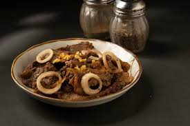

Bistek Tagalog, also known as Filipino Beef Steak, is thinly sliced beef marinated in soy sauce and calamansi,
then pan-fried with onion rings on top. Some people just call it beefsteak, especially the home cooked version.
You will see Bistek Tagalog served in homes, carinderias, and family gatherings across the country.